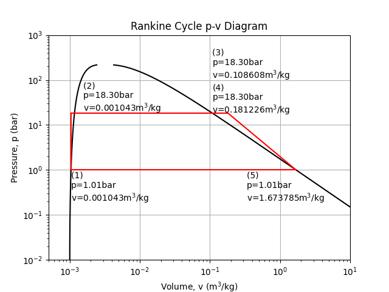
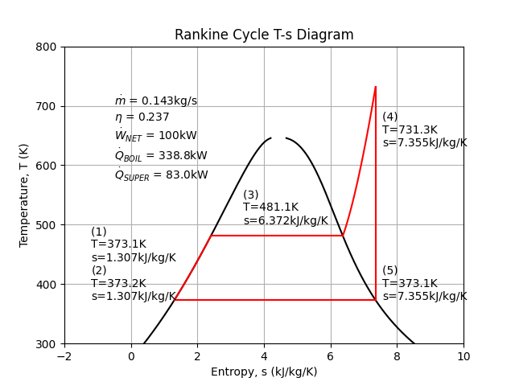
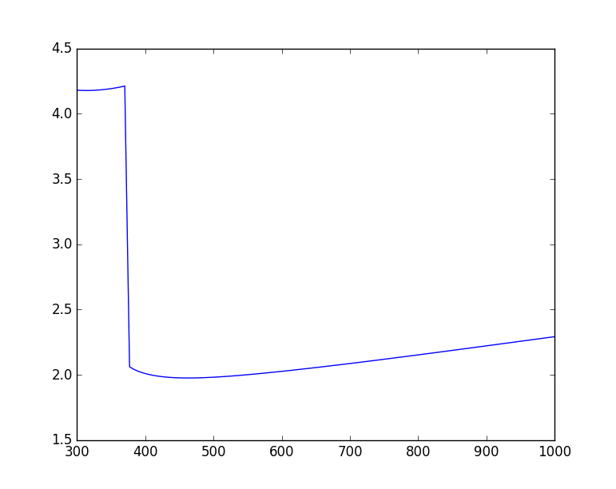
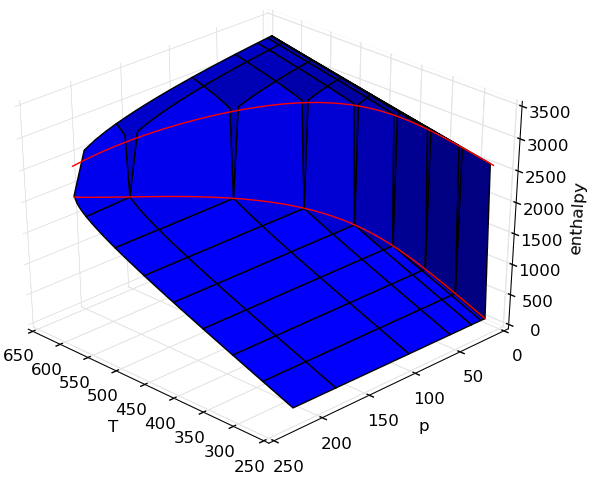
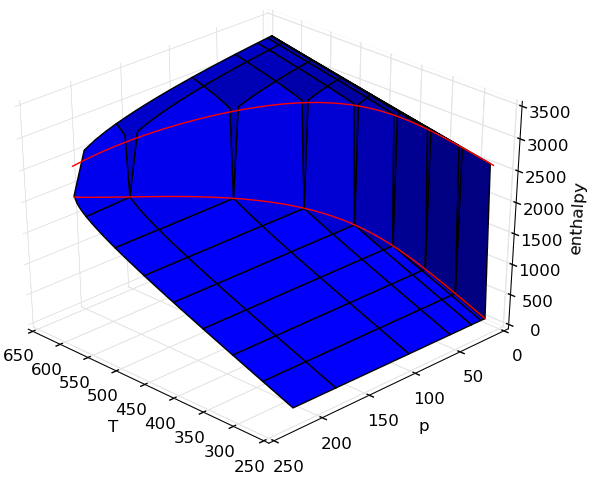
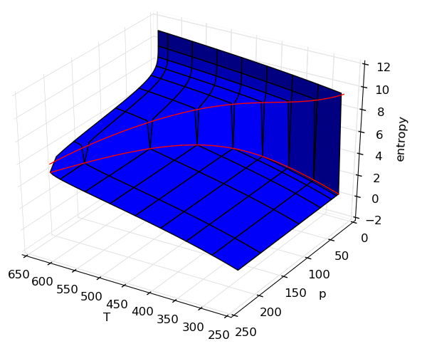

PYroMat How-To and FAQ
Installation questions
PIP problems
Installing from the Python Package Index (pypi) is probably the easiest way to get up and running with PYroMat, but if the pip utility is not already installed, or if it is not working properly, you may find yourself frustrated. Hopefully, this FAQ should help you get up and running.
There is a very good tutorial maintained by the Python Packaging Authority at https://packaging.python.org/tutorials/installing-packages/. Notice that pip can be applied directly to downloaded zip files and tarballs.
Every pip installation problem I've seen so far has either been because pip wasn't installed or because it was an out-dated version. Don't trust a package manager to upgrade pip; let it upgrade itself. From the command line
If that doesn't work, I have had excellent luck with a fresh installation of pip. To install pip directly from the Python Packaging Authority, follow the instructions at https://pip.pypa.io/en/stable/installing/. You only need to download and run get-pip.py. The Python Packaging Authority (PyPA) has a great how-to at https://packaging.python.org/tutorials/installing-packages/.
I have not yet run into a case where these steps did not address the problem, but if you STILL can't get pip to work, you might have success installing from the github repository using the legacy method below.
Legacy installation
The Python Packaging Authority has moved away from recommending installation using direct calls to a setup.py script, but they still work. If you are having a hard time getting pip to work, or if you are experimenting with a non-standard installation, this could be a useful option.
If you are working inside an integrated development environment (IDE), make sure the python binary you are using to evoke setup.py is the same one your IDE uses. For example, many Python installations have moved towards virtual environments despite the complexity and obfuscation they bring with them.
Obtain a source distribution of PYroMat either from github or from sourceforge. Decompress the distribution file (either a .zip or .tar.gz or .tar.bz2) and navigate into the root directory. There, you should find a setup.py file.
If you have problems with direct installation like this, I would guess that they are probably due to some issue with setuptools. All of the recommended solutions seem to involve pip. If you were trying to use setup.py in the first place because of a problem with pip, then you are probably pretty frustrated right now. My only consolation to you is that I've been there before. The solution is to fix pip.
Cycle analysis
It is difficult to name a more classical application for thermodynamic property calculators than cycle analysis. Generations of mechanical engineers paid their dues studying the property tables; the important tools for the design and study of engines, heat pumps, and the many other fluid machines on which we all depend. Here are example codes using PYroMat to perform two classical analyses; Brayton and Rankine cycles.
A Brayton cycle analysis
The Brayton cycle is sometimes better known as a jet engine, but it is also at the heart of the most efficient power plants in the world. When air is the working fluid, we don't need heat exchangers; we can burn the fuel right in the working fluid.
The Brayton cycle uses three processes to separate four states: (1) ambient air is compressed to some elevated pressure, (2) fuel is burned at constant pressure to heat the working fluid, and (3) work is extracted by a turbine. Here's an example where we compute the mass flow required to produce a 100kW turbine using a 12:1 pressure ratio.
Source
A Rankine cycle analysis
Of all the thermodynamic engine cycles, arguably none has had so substantial impact on our society and culture as the Rankine cycle; though the Diesel and Otto cycles might have something to say about that. The Rankine cycle is sometimes known as the steam engine. In addition to driving the industrial revolution, fueling the rise of rail around the world, and powering the first ships that could "sail" into the wind, the Rankine cycle still provides most of the world's electricity in nuclear, coal, and even the back-end of combined-cycle gas turbine plants.
The Rankine cycle usually uses water as its working fluid. Despite its unfortunate corrosive properties, water is quite remarkable for its high specific heat and latent heat of vaporization. The Rankine cycle uses four or five steps to separate four or five states: (1) a pump pressurizes liquid water from a low-pressure reservoir, (2) a boiler heats the liquid water to a boil, (2b) sometimes, a "super-heater" is added to continue heating the steam, (3) a turbine or piston expands the steam to produce work, and (4) a condenser cools the fluid back to a liquid before returning it to the reservoir.
Here is an example analysis to calculate the mass flow of water needed to produce 100kW with a boiler at 250psi, and a super-heater. The super-heater heat is calculated so that the piston/turbine output is a saturated vapor.
Source 
Multi-phase
For working with multi-phase substances like steam/water, it is sometimes important to calculate properties that are "under the dome." There is a discontinuity in fluid properties at a phase change. For example, at 1 atmosphere, the enthalpy of steam jumps from about 419kJ/kg to about 2,676kJ/kg. In theory, there is no form of water possesses 1,500kJ/kg at atmospheric pressure, but a mixture of vapor and liquid does. The percent by mass of that mixture made up of vapor is called quality, and it is denoted with an "x."
Using quality in properties
Instead of the typical temperature and pressure call signature, quality can be an argument to steam's properties. Note that when quality is specified, the state must be on the saturation curve. Specifying pressure or temperature has the same effect.
>>> import pyromat as pm
>>> H2O = pm.get('mp.H2O')
>>> H2O.h(T=450., x=0.5)
1761.8517643696659
>>> p = H2O.ps(T=450.)
>>> H2O.h(p=p, x=0.5)
1761.8517643696659
Quality obeys the same array rules as does any other argument to a property method.
>>> H2O.h(T=450., x=[.1, .2, .3, .4, .5])
array([ 951.80502462, 1154.31670956, 1356.82839449, 1559.34007943,
1761.85176437])
Retrieving quality from properties
It is also possible to obtain quality while going backwards from this process. There is an optional keyword parameter called "quality" that, if set to "True," prompts property methods to return both temperature and quality. Here, we obtain the saturation temperature, pressure, and liquid/vapor enthalpies all in one command. Then, T reports that at 9.32041bar, water with 2000kJ/kg is at 450 Kelvin and has 0.618 quality.
>>> H2O.hs(T=450.,tp=True) (450.0, 9.3204107913593361, 749.29333968000344, 2774.4101890593283) >>> H2O.T(h = 2000., p=9.32041, quality=True) (array(449.9999963649258), array(0.6175972852487263))
Working with saturation properties
Saturation properties are the properties of the liquid and vapor along the saturation line. There are special methods set asside specifically for calculating the saturation properties. Most of them accept either temperature or pressure to specify the location on the saturation curve, and return a result in a tuple pair. For example, this code calculates the liquid and vapor density and then enthalpy.
>>> H2O.ds(T=450.) (array([890.34372544]), array([4.81191942])) >>> H2O.hs(T=450.) (array([749.17150636]), array([2774.44153121]))
This same behavior is exhibited by other saturation methods, but Ts, and ps are exceptions. They only return one value, and they only accept one another as arguments.
>>> H2O.ps(T=450.) 9.322032148068905 >>> H2O.Ts(p=9.322032148068905) array([450.])
Plotting
PYroMat class methods natively support numpy arrays, which makes plotting easy.
>>> import matplotlib.pyplot as plt
>>> import numpy as np
>>> import pyromat as pm
>>> T = np.linspace(300.,1000.,101)
>>> air = pm.get('mp.H2O')
>>> plt.plot(T, air.cp(T))

Making surface plots
It is often useful to view properties as surfaces over temperature and pressure, but the code is not usually easy. In this example, adding on the saturation lines is actually far more code than generating the surfaces.
Source 

Frequently asked questions
H2O is in the ideal gas collection and the multi-phase collection. Why?
Short answer: It isn't just water; there are several substances represented in both the multi-phase and ideal gas collections. They are two different models created for two different purposes.
It would seem like you could get everything you needed from the multi-phase version right? After all, the multi-phase collection water covers both liquid AND gas. Look more carefully, though; the upper temperature limit on multiphase water is 2,273.15K (2,000oC). Not bad, but the ideal gas data go all the way up to 6,000K. On the other hand, at lower temperatures, the ideal gas model will only be valid when the pressure is very low.
These drastic differences illustrate the different purposes for which these data sets were created. The ideal gas collection was created primarily for reaction modeling. Water is a primary combustion product, in that role it usually shows up at high temperatures, and the ideal gas assumption gets sketchy around the boiling point anyway. Meanwhile, the multi-phase collection is primarily useful for cycle modeling, and doesn't adhere to the NIST-JANAF enthalpy conventions.
PYroMat disagrees with my property table. Is this an error?
Short answer: maybe, but probably not.
I get this question more than any other. If the property in question is entropy or enthalpy, there is probably no error. It is important to remember that enthalpy and entropy are integrated properties; their values are defined in terms of an integral of another property (specific heat). That means that there is a somewhat arbitrary choice of integration constant.
Members of the ideal gas collection obey their own convention that is self-consistent across species, but may not agree with the choices made by other sources. For example, the IF-97 class for water and the ideal gas properties of water return inconsistent values for enthalpy. However, notice that the specific heats agree to within 0.1% at 1 atm.
>>> import pyromat as pm
>>> mp_H2O = pm.get('mp.H2O')
>>> ig_H2O = pm.get('ig.H2O')
>>> mp_H2O.h(1000.)
3990.6638781507377
>>> ig_H2O.h(1000.)
array(-11980.04050260982)
>>> mp_H2O.cp(1000.)
2.2920664690248009
>>> ig_H2O.cp(1000.)
array(2.2905867790156145)
Isn't that bad!? Not at all. For the vast majority of all problems of engineering and scientific interest, the absolute value of enthalpy and entropy is irrelevant. It is the change in those properties that is important (e.g. conservation of energy and the various incarnations of the second law). The choice of an integration factor is only important when we are comparing the properties of one species to another (e.g. chemical reactions or phase changes).
If you already understand all this, and you still think you've spotted an error in the properties, I'd really like to know about it. Please do email me! I may not get back to you right away, but please do be patient with me.
What unit system does PYroMat use?
PYroMat defaults to kJ, kg, Kelvin, and bar. But, all units are configurable using PYroMat's configuration system.
To know how an individual property is being reported, each method comes with in-line documentation that tells you what units that method uses. For example, densities use unit_matter/unit_volume. To check PYroMat's current settings, just type pm.config to print a summary of the current settings.
Contact:
Christopher R. Martin, Ph.D.
Associate Professor of Mechanical Engineering
The Pennsylvania State University, Altoona College
crm28@psu.edu
©2021 Released under the GPLv3 License